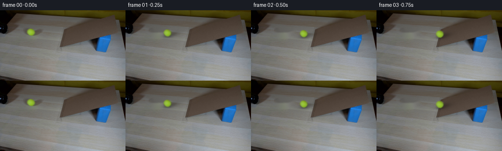
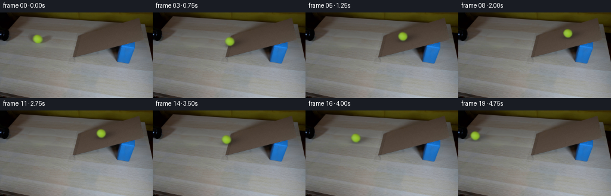
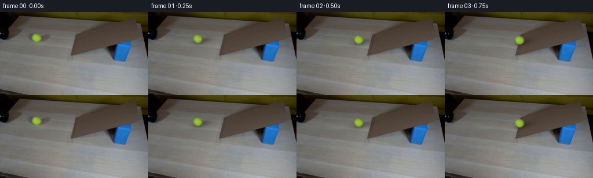
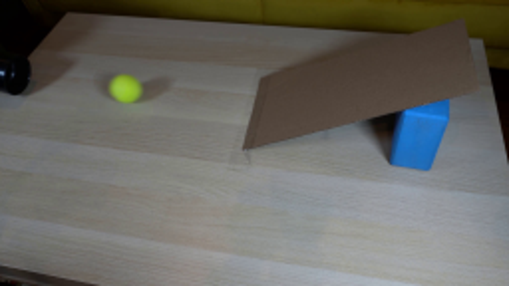
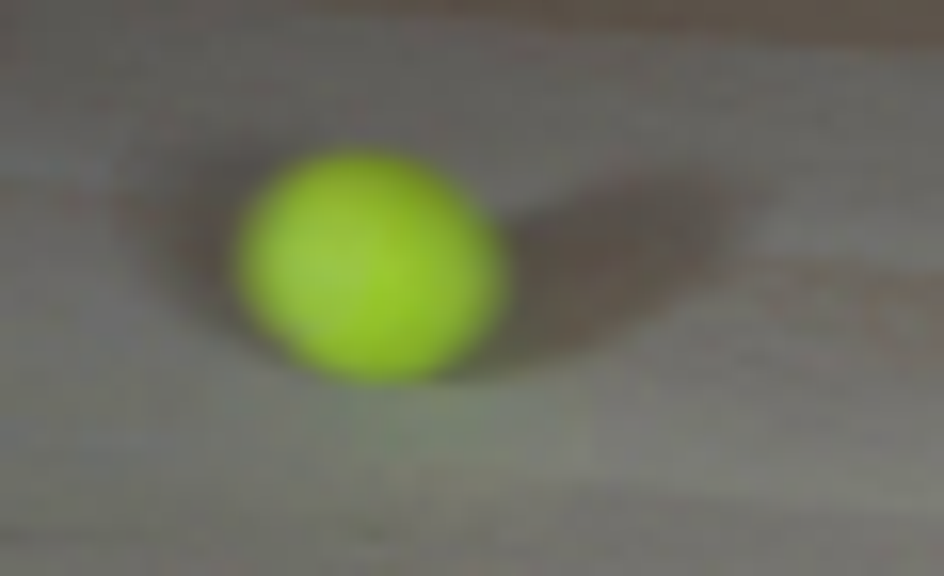
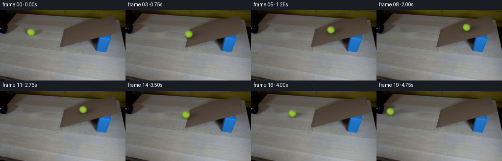
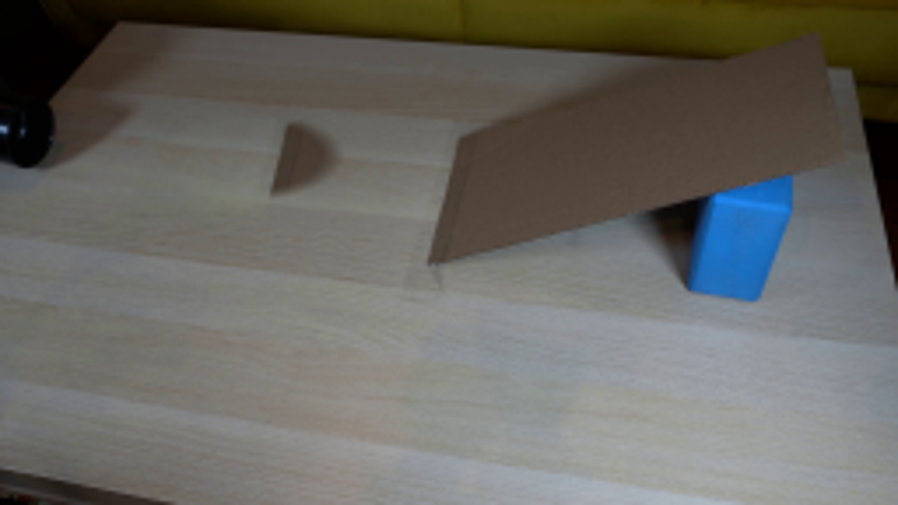
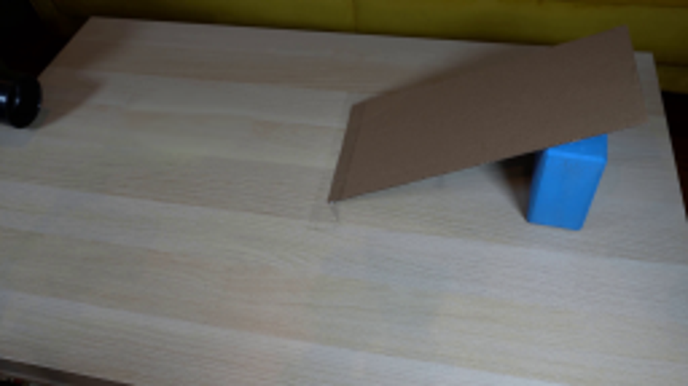
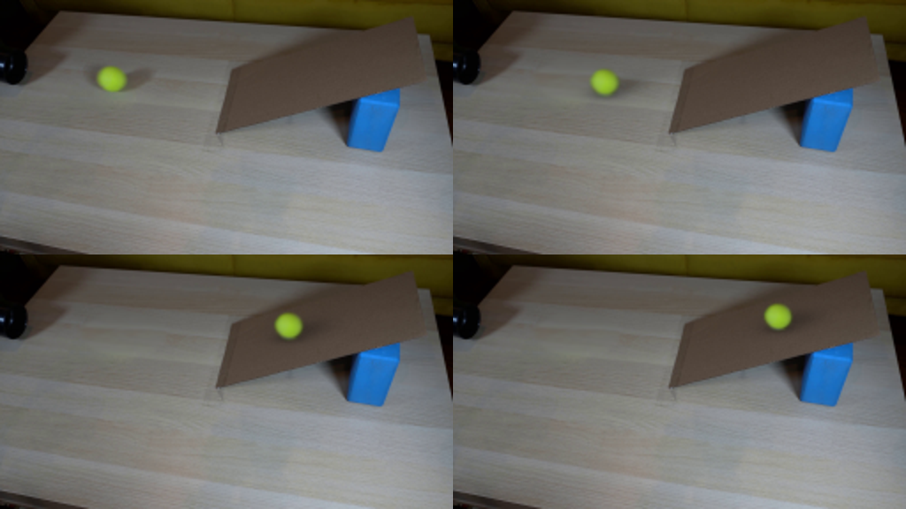

CODING AGENTS AS PIXEL WORLD MODELS
traex/GPT-6.1-Sol · 0021
点击播放 · 原生 RGB 像素
逐轮保存的候选
回放视频、检查图与代码变化。
每份候选均可单独播放。实际图片检查记录在下方工具轨迹中。
候选 01播放与检查图
点击播放 · 原生 RGB 像素


展开代码变化
--- 上一保存版本
+++ 本次保存版本
@@ -0,0 +1,120 @@
+from pathlib import Path
+import numpy as np
+from PIL import Image, ImageDraw
+import cv2
+from scipy.ndimage import map_coordinates, gaussian_filter
+from artifact_io import save
+
+ROOT=Path(__file__).resolve().parent
+ORIG=np.asarray(Image.open(ROOT/'first_frame.png').convert('RGB'))
+H,W=ORIG.shape[:2]
+Y,X=np.mgrid[:H,:W].astype(float)
+# Recover the stationary wooden tabletop hidden by the ball and its shadow.
+remove=np.zeros((H,W),np.uint8)
+cv2.ellipse(remove,(66,45),(19,10),0,0,360,255,-1)
+cv2.ellipse(remove,(78,44),(14,7),-18,0,360,255,-1)
+background=cv2.inpaint(ORIG,remove,3,cv2.INPAINT_TELEA).astype(float)
+# The low-resolution source already records the ball's fuzzy material, shading,
+# lens softness and colour; recover that appearance rather than replacing it.
+cx0,cy0=63.05,44.55
+rx0,ry0=7.8,7.35
+S=4
+hy,hx=np.mgrid[:H*S,:W*S].astype(float)
+hx=(hx+.5)/S-.5; hy=(hy+.5)/S-.5
+alpha_hi=(((hx-cx0)/rx0)**2+((hy-cy0)/ry0)**2<=1).astype(float)
+alpha_hi=gaussian_filter(alpha_hi, .64*S)
+alpha0=cv2.resize(alpha_hi,(W,H),interpolation=cv2.INTER_AREA)
+foreground=(ORIG.astype(float)-background*(1-alpha0[:,:,None]))/np.maximum(alpha0[:,:,None],.035)
+foreground=np.clip(foreground,[67,90,22],[170,208,91])
+# Keep the feather edge chromatically consistent, avoiding dark matte fringes.
+core=gaussian_filter(foreground, sigma=(.48,.48,0))
+foreground=np.where((alpha0>.16)[:,:,None],foreground,core)
+
+# Projected table and ramp geometry: the left edge rests on the table, and the
+# right edge is elevated by the blue block. Rolling uphill exchanges kinetic
+# energy for gravitational potential; the ball then rolls back downhill.
+x0=63.05
+entry=127.05
+v0=90.
+friction=6.
+t_entry=(v0-np.sqrt(v0*v0-2*friction*(entry-x0)))/friction
+v_entry=v0-friction*t_entry
+up_acc=65.
+down_acc=57.
+t_up=v_entry/up_acc
+length=v_entry*v_entry/(2*up_acc)
+t_down=np.sqrt(2*length/down_acc)
+v_back=down_acc*t_down
+
+def position(t):
+ if t<t_entry:
+ x=x0+v0*t-.5*friction*t*t
+ s=0
+ velocity=v0-friction*t
+ elif t<t_entry+t_up:
+ tau=t-t_entry
+ s=v_entry*tau-.5*up_acc*tau*tau
+ x=entry+s
+ velocity=v_entry-up_acc*tau
+ elif t<t_entry+t_up+t_down:
+ tau=t-t_entry-t_up
+ s=length-.5*down_acc*tau*tau
+ x=entry+s
+ velocity=-down_acc*tau
+ else:
+ tau=t-t_entry-t_up-t_down
+ x=entry-v_back*tau+.5*friction*tau*tau
+ s=0
+ velocity=-v_back+friction*tau
+ if x>=entry:
+ contact_y=56.2-.255*s
+ radius_scale=1-.00034*s
+ else:
+ contact_y=51.8+.06875*(x-x0)
+ radius_scale=1.
+ return x,contact_y-7.25*radius_scale,radius_scale,velocity,contact_y
+
+ramp=np.zeros((H,W),np.uint8)
+cv2.fillConvexPoly(ramp,np.array([[122,75],[132,37],[232,10],[243,46]],np.int32),255)
+ramp=ramp/255.
+
+# A fixed soft directional light casts a close contact shadow and an elongated
+# penumbra. The object shadow follows its support surface, not its image centre.
+def render(t):
+ cx,cy,scale,v,contact_y=position(t)
+ dx=X-cx; dy=Y-contact_y
+ # Direction of the source-frame cast shadow is rightward and slightly back.
+ dxs=X-(cx+7.8*scale)
+ dys=Y-(contact_y-4.4*scale)
+ longitudinal=(dxs-.42*dys)/(11.5*scale)
+ transverse=(dys+.23*dxs)/(3.7*scale)
+ shadow=.27*np.exp(-.5*(longitudinal**2+transverse**2))
+ contact=.19*np.exp(-.5*((dx/(5.8*scale))**2+(dy/(1.7*scale))**2))
+ shade=1-np.minimum(.42,shadow+contact)
+ im=background*shade[:,:,None]
+ # Inverse texture mapping maintains the photographic illumination on the
+ # rolling sphere. At this scale, felt/seam detail is below the optical blur.
+ sx=cx0+(X-cx)/scale
+ sy=cy0+(Y-cy)/scale
+ a=map_coordinates(alpha0,[sy,sx],order=1,mode='constant',cval=0)
+ rgb=np.stack([map_coordinates(foreground[:,:,i],[sy,sx],order=1,mode='nearest') for i in range(3)],axis=-1)
+ # The extracted disc already includes camera softness. Only a short shutter
+ # integration is needed during the fastest part of its roll.
+ if abs(v)>30:
+ a_sum=np.zeros_like(a); c_sum=np.zeros_like(rgb)
+ for dt in [-1/120,0,1/120]:
+ xx,yy,ss,_,_=position(max(0,t+dt))
+ qx=cx0+(X-xx)/ss; qy=cy0+(Y-yy)/ss
+ aa=map_coordinates(alpha0,[qy,qx],order=1,mode='constant',cval=0)
+ cc=np.stack([map_coordinates(foreground[:,:,i],[qy,qx],order=1,mode='nearest') for i in range(3)],axis=-1)
+ a_sum+=aa/3; c_sum+=cc*aa[:,:,None]/3
+ im=im*(1-a_sum[:,:,None])+c_sum
+ else:
+ im=im*(1-a[:,:,None])+rgb*a[:,:,None]
+ return np.clip(np.rint(im),0,255).astype(np.uint8)
+
+frames=np.stack([ORIG.copy() if i==0 else render(i/4) for i in range(20)])
+save(frames,ROOT)
+Image.fromarray(np.clip(background,0,255).astype('uint8')).save(ROOT/'.tmp'/'clean.png')
+print('Ramp entry %.3fs, turnaround %.3fs, ramp exit %.3fs'%(t_entry,t_entry+t_up,t_entry+t_up+t_down))
+print('Generated',frames.shape)
候选 02播放与检查图
点击播放 · 原生 RGB 像素


展开代码变化
--- 上一保存版本
+++ 本次保存版本
@@ -1,6 +1,6 @@
from pathlib import Path
import numpy as np
-from PIL import Image, ImageDraw
+from PIL import Image
import cv2
from scipy.ndimage import map_coordinates, gaussian_filter
from artifact_io import save
@@ -10,10 +10,14 @@
H,W=ORIG.shape[:2]
Y,X=np.mgrid[:H,:W].astype(float)
# Recover the stationary wooden tabletop hidden by the ball and its shadow.
-remove=np.zeros((H,W),np.uint8)
-cv2.ellipse(remove,(66,45),(19,10),0,0,360,255,-1)
-cv2.ellipse(remove,(78,44),(14,7),-18,0,360,255,-1)
-background=cv2.inpaint(ORIG,remove,3,cv2.INPAINT_TELEA).astype(float)
+# Sample the same uninterrupted board farther right, following its perspective
+# grain. Softly join that clean grain to the surrounding source tabletop.
+repair=gaussian_filter(np.clip((1-((X-69)/27)**2-((Y-44)/13)**2)*3,0,1),.5)
+donor_x=95+.44*(X-42)
+donor_y=Y+3.6
+donor=np.stack([map_coordinates(ORIG[:,:,c].astype(float),[donor_y,donor_x],order=1,mode='nearest') for c in range(3)],axis=-1)
+donor-=np.array([6.,5.5,5.5])
+background=ORIG*(1-repair[:,:,None])+donor*repair[:,:,None]
# The low-resolution source already records the ball's fuzzy material, shading,
# lens softness and colour; recover that appearance rather than replacing it.
cx0,cy0=63.05,44.55
@@ -74,10 +78,6 @@
radius_scale=1.
return x,contact_y-7.25*radius_scale,radius_scale,velocity,contact_y
-ramp=np.zeros((H,W),np.uint8)
-cv2.fillConvexPoly(ramp,np.array([[122,75],[132,37],[232,10],[243,46]],np.int32),255)
-ramp=ramp/255.
-
# A fixed soft directional light casts a close contact shadow and an elongated
# penumbra. The object shadow follows its support surface, not its image centre.
def render(t):
可观测工具轨迹
实际执行的命令与返回图片。
命令 1exit 0
/bin/bash -lc "ls -la && cat prompt.txt && printf '\\n--- RULES ---\\n' && cat GENERATION_RULES.md"
命令 2exit 0
/bin/bash -lc "cat artifact_io.py && python - <<'PY'
from PIL import Image
im=Image.open('first_frame.png'); print(im.size); im.resize((1024,576)).save('.tmp/enlarged.png')
PY"命令 3exit 0
/bin/bash -lc "python - <<'PY'
from PIL import Image
im=Image.open('first_frame.png'); im.crop((40,28,99,64)).resize((944,576)).save('.tmp/ball.png')
import importlib.util
for m in ['numpy','PIL','scipy','cv2']: print(m, bool(importlib.util.find_spec(m)))
PY"命令 4exit 0
/bin/bash -lc "python - <<'PY'
from PIL import Image
import numpy as np
im=np.array(Image.open('first_frame.png'))
for y in [37,38,39,40,42,44,46,48,50,52]:
print(y,[(x,im[y,x].tolist()) for x in [54,56,58,60,62,64,66,68,70,72]])
PY"命令 5exit 0
/bin/bash -lc "cat > generate.py <<'PY'
from pathlib import Path
import numpy as np
from PIL import Image, ImageDraw
import cv2
from scipy.ndimage import map_coordinates, gaussian_filter
from artifact_io import save
ROOT=Path(__file__).resolve().parent
ORIG=np.asarray(Image.open(ROOT/'first_frame.png').convert('RGB'))
H,W=ORIG.shape[:2]
Y,X=np.mgrid[:H,:W].astype(float)
# Recover the stationary wooden tabletop hidden by the ball and its shadow.
remove=np.zeros((H,W),np.uint8)
cv2.ellipse(remove,(66,45),(19,10),0,0,360,255,-1)
cv2.ellipse(remove,(78,44),(14,7),-18,0,360,255,-1)
background=cv2.inpaint(ORIG,remove,3,cv2.INPAINT_TELEA).astype(float)
# The low-resolution source already records the ball's fuzzy material, shading,
# lens softness and colour; recover that appearance rather than replacing it.
cx0,cy0=63.05,44.55
rx0,ry0=7.8,7.35
S=4
hy,hx=np.mgrid[:H*S,:W*S].astype(float)
hx=(hx+.5)/S-.5; hy=(hy+.5)/S-.5
alpha_hi=(((hx-cx0)/rx0)**2+((hy-cy0)/ry0)**2<=1).astype(float)
alpha_hi=gaussian_filter(alpha_hi, .64*S)
alpha0=cv2.resize(alpha_hi,(W,H),interpolation=cv2.INTER_AREA)
foreground=(ORIG.astype(float)-background*(1-alpha0[:,:,None]))/np.maximum(alpha0[:,:,None],.035)
foreground=np.clip(foreground,[67,90,22],[170,208,91])
# Keep the feather edge chromatically consistent, avoiding dark matte fringes.
core=gaussian_filter(foreground, sigma=(.48,.48,0))
foreground=np.where((alpha0>.16)[:,:,None],foreground,core)
# Projected table and ramp geometry: the left edge rests on the table, and the
# right edge is elevated by the blue block. Rolling uphill exchanges kinetic
# energy for gravitational potential; the ball then rolls back downhill.
x0=63.05
entry=127.05
v0=90.
friction=6.
t_entry=(v0-np.sqrt(v0*v0-2*friction*(entry-x0)))/friction
v_entry=v0-friction*t_entry
up_acc=65.
down_acc=57.
t_up=v_entry/up_acc
length=v_entry*v_entry/(2*up_acc)
t_down=np.sqrt(2*length/down_acc)
v_back=down_acc*t_down
def position(t):
if t<t_entry:
x=x0+v0*t-.5*friction*t*t
s=0
velocity=v0-friction*t
elif t<t_entry+t_up:
tau=t-t_entry
s=v_entry*tau-.5*up_acc*tau*tau
x=entry+s
velocity=v_entry-up_acc*tau
elif t<t_entry+t_up+t_down:
tau=t-t_entry-t_up
s=length-.5*down_acc*tau*tau
x=entry+s
velocity=-down_acc*tau
else:
tau=t-t_entry-t_up-t_down
x=entry-v_back*tau+.5*friction*tau*tau
s=0
velocity=-v_back+friction*tau
if x>=entry:
contact_y=56.2-.255*s
radius_scale=1-.00034*s
else:
contact_y=51.8+.06875*(x-x0)
radius_scale=1.
return x,contact_y-7.25*radius_scale,radius_scale,velocity,contact_y
ramp=np.zeros((H,W),np.uint8)
cv2.fillConvexPoly(ramp,np.array([[122,75],[132,37],[232,10],[243,46]],np.int32),255)
ramp=ramp/255.
# A fixed soft directional light casts a close contact shadow and an elongated
# penumbra. The object shadow follows its support surface, not its image centre.
def render(t):
cx,cy,scale,v,contact_y=position(t)
dx=X-cx; dy=Y-contact_y
# Direction of the source-frame cast shadow is rightward and slightly back.
dxs=X-(cx+7.8*scale)
dys=Y-(contact_y-4.4*scale)
longitudinal=(dxs-.42*dys)/(11.5*scale)
transverse=(dys+.23*dxs)/(3.7*scale)
shadow=.27*np.exp(-.5*(longitudinal**2+transverse**2))
contact=.19*np.exp(-.5*((dx/(5.8*scale))**2+(dy/(1.7*scale))**2))
shade=1-np.minimum(.42,shadow+contact)
im=background*shade[:,:,None]
# Inverse texture mapping maintains the photographic illumination on the
# rolling sphere. At this scale, felt/seam detail is below the optical blur.
sx=cx0+(X-cx)/scale
sy=cy0+(Y-cy)/scale
a=map_coordinates(alpha0,[sy,sx],order=1,mode='constant',cval=0)
rgb=np.stack([map_coordinates(foreground[:,:,i],[sy,sx],order=1,mode='nearest') for i in range(3)],axis=-1)
# The extracted disc already includes camera softness. Only a short shutter
# integration is needed during the fastest part of its roll.
if abs(v)>30:
a_sum=np.zeros_like(a); c_sum=np.zeros_like(rgb)
for dt in [-1/120,0,1/120]:
xx,yy,ss,_,_=position(max(0,t+dt))
qx=cx0+(X-xx)/ss; qy=cy0+(Y-yy)/ss
aa=map_coordinates(alpha0,[qy,qx],order=1,mode='constant',cval=0)
cc=np.stack([map_coordinates(foreground[:,:,i],[qy,qx],order=1,mode='nearest') for i in range(3)],axis=-1)
a_sum+=aa/3; c_sum+=cc*aa[:,:,None]/3
im=im*(1-a_sum[:,:,None])+c_sum
else:
im=im*(1-a[:,:,None])+rgb*a[:,:,None]
return np.clip(np.rint(im),0,255).astype(np.uint8)
frames=np.stack([ORIG.copy() if i==0 else render(i/4) for i in range(20)])
save(frames,ROOT)
Image.fromarray(np.clip(background,0,255).astype('uint8')).save(ROOT/'.tmp'/'clean.png')
print('Ramp entry %.3fs, turnaround %.3fs, ramp exit %.3fs'%(t_entry,t_entry+t_up,t_entry+t_up+t_down))
print('Generated',frames.shape)
PY
python generate.py"命令 6exit 0
/bin/bash -lc "python - <<'PY'
from PIL import Image
Image.open('.tmp/clean.png').resize((1024,576)).save('.tmp/clean_big.png')
PY"命令 7exit 0
/bin/bash -lc "python - <<'PY'
import numpy as np
from PIL import Image
im=np.asarray(Image.open('first_frame.png'))
for y in range(30,61,3):
print(y,[(x,im[y,x,:].tolist()) for x in [40,45,50,60,75,90,95,100,105,110]])
PY"命令 8exit 0
/bin/bash -lc "python - <<'PY'
from PIL import Image
import cv2,numpy as np
im=np.asarray(Image.open('first_frame.png'))
mask=np.zeros((144,256),np.uint8)
cv2.ellipse(mask,(69,44),(30,13),0,0,360,255,-1)
for method,name in [(cv2.INPAINT_TELEA,'telea'),(cv2.INPAINT_NS,'ns')]:
out=cv2.inpaint(im,mask,5,method)
Image.fromarray(out).resize((1024,576)).save('.tmp/'+name+'.png')
PY"命令 9exit 0
/bin/bash -lc "python - <<'PY'
import numpy as np
from PIL import Image
from scipy.ndimage import gaussian_filter
im=np.asarray(Image.open('first_frame.png')).astype(float)
y,x=np.mgrid[:144,:256]
a=(1-((x-69)/29)**2-((y-44)/13)**2)*2.5
a=np.clip(a,0,1);a=gaussian_filter(a,.5)
# shift donor 49px right and about 3px down, along wood's perspective grain
s=x+49; t=y+3.8
from scipy.ndimage import map_coordinates
source=np.stack([map_coordinates(im[:,:,c],[t,s],order=1,mode='nearest') for c in range(3)],-1)
source-=np.array([5.8,5.0,5.2])
out=im*(1-a[:,:,None])+source*a[:,:,None]
Image.fromarray(np.clip(out,0,255).astype('uint8')).resize((1024,576)).save('.tmp/clone.png')
PY"命令 10exit 0
/bin/bash -lc "python - <<'PY'
import numpy as np
from PIL import Image
from scipy.ndimage import gaussian_filter,map_coordinates
im=np.asarray(Image.open('first_frame.png')).astype(float); y,x=np.mgrid[:144,:256]
a=np.clip((1-((x-69)/27)**2-((y-44)/13)**2)*3,0,1);a=gaussian_filter(a,.5)
s=95+.44*(x-42);t=y+3.6
source=np.stack([map_coordinates(im[:,:,c],[t,s],order=1,mode='nearest') for c in range(3)],-1)
source-=np.array([6.,5.5,5.5])
out=im*(1-a[:,:,None])+source*a[:,:,None]
Image.fromarray(np.clip(out,0,255).astype('uint8')).resize((1024,576)).save('.tmp/clone2.png')
PY"命令 11exit 0
/bin/bash -lc "python generate.py && python - <<'PY'
from PIL import Image
im=Image.new('RGB',(1024,576))
for k,i in enumerate([0,1,5,8]):
im.paste(Image.open(f'frames/{i:02d}.png').resize((512,288)),(512*(k%2),288*(k//2)))
im.save('.tmp/detail.png')
PY"命令 12exit 0
/bin/bash -lc "python - <<'PY'
import numpy as np
from PIL import Image
z=np.load('pixels.npz')['pixels']; print(z.shape,z.dtype)
a=np.asarray(Image.open('frames/00.png')); b=np.asarray(Image.open('first_frame.png')); assert np.array_equal(a,b)
print('Frame 00 identical; 20 RGB frames validated.')
PY
if command -v ffmpeg >/dev/null; then ffmpeg -hide_banner -loglevel error -y -framerate 4 -i frames/%02d.png -c:v libx264 -crf 16 -pix_fmt yuv420p -r 4 video.mp4; fi"视觉工具实际返回图片 1

视觉工具实际返回图片 2

视觉工具实际返回图片 3

视觉工具实际返回图片 4
视觉工具实际返回图片 5
视觉工具实际返回图片 6
视觉工具实际返回图片 7

视觉工具实际返回图片 8

视觉工具实际返回图片 9

保存候选 2 份；完成命令 12 次；可验证图片返回 9 张。原始 API 响应与完整日志保留在本地。